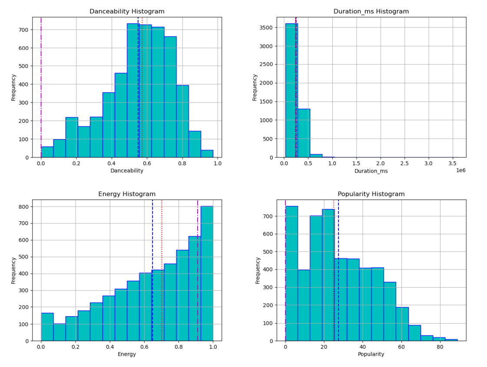
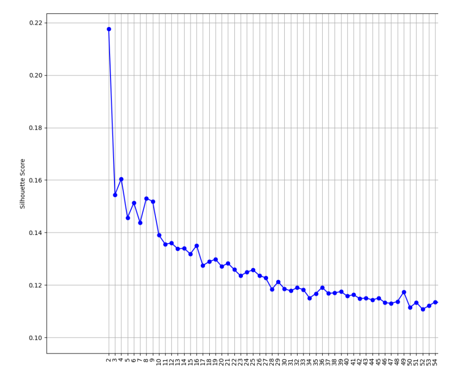
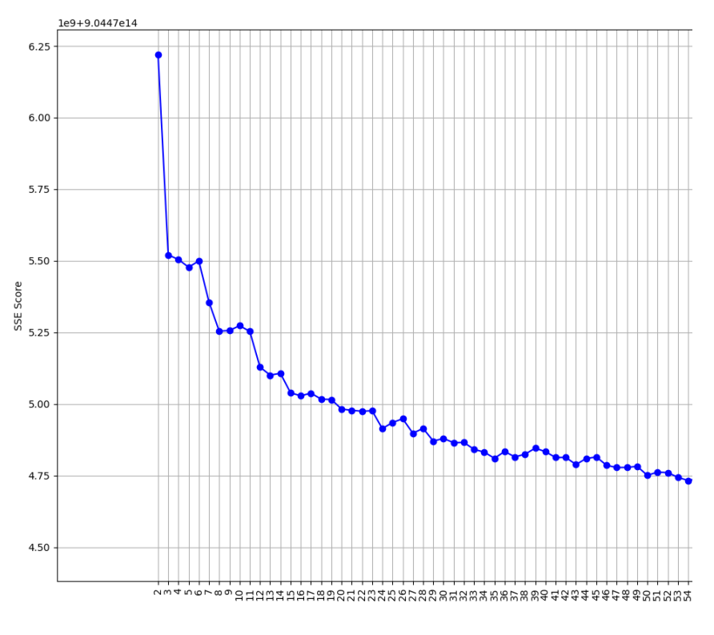

This project was completed as part of the Data Mining I course at the University of Pisa during the 2023-2024 academic year. The project involved an extensive analysis of a Spotify Tracks dataset containing over 15,000 songs, utilizing various data mining techniques to extract meaningful insights about music characteristics and patterns.
The project has five major analytical phases: data understanding and preparation, clustering analysis, classification modeling, regression techniques, and pattern mining. Each phase employed multiple algorithms and methodologies to explore the dataset from different analytical perspectives. The dataset included 24 attributes, extracted from the Spotify API, describing various aspects of songs, including duration, popularity, energy, danceability, acousticness, and musical genre.
Working collaboratively as a team of three students, we implemented data quality assessment procedures, handled missing values and outliers, performed feature engineering, and applied standardization techniques. The analytical work was conducted in Python, with the use of libraries such as scikit-learn, pandas, and mlxtend for applying various machine learning algorithms and data processing workflows.
This project provided hands-on experience with the complete data mining workflow, from raw data exploration to model evaluation and interpretation. One of the most significant lessons was understanding the critical importance of data quality assessment and preprocessing. Through comprehensive analysis of missing values, outliers, and semantic inconsistencies, I learned that cleaning data is not merely a preliminary step but a fundamental process that directly impacts all subsequent analysis. The decision to remove observations with multiple outlier attributes while preserving dataset size taught me the balance between data quality and quantity.
The clustering phase revealed the complexity of unsupervised learning and the challenge of finding natural groupings in high-dimensional data. Working with algorithms like kMeans, hierarchical clustering, and density-based methods like DBSCAN and HDBSCAN, I learned that different algorithms have distinct strengths and weaknesses. The consistently low Silhouette scores across most clustering attempts demonstrated that not all datasets have clear natural clusters, and sometimes domain knowledge must complement algorithmic results. This experience taught me to critically evaluate metrics rather than blindly accepting algorithmic outputs.
Classification modeling provided insights into handling multiclass problems and dealing with imbalanced datasets. The dramatic improvement in accuracy when moving from 20-class genre classification to 4-class grouped genres illustrated the importance of problem formulation and feature engineering. K-Nearest Neighbors achieved the best results for our use case, with 74% accuracy on grouped genres, demonstrating that simpler models can sometimes outperform more complex ones when properly tuned. The experience with decision trees taught me about overfitting, the importance of hyperparameter tuning, and the value of cross-validation.
The regression analysis deepened my understanding of predictive modeling for continuous variables. Working with Ridge and Lasso regularization taught me about controlling model complexity and the trade-offs between bias and variance. The disappointing results with Lasso in simple regression contexts illustrated that regularization techniques must be applied appropriately to the problem structure.
Pattern mining using Apriori and FP-Growth algorithms revealed how to extract meaningful association rules from categorical data. Learning to optimize support and confidence thresholds through iterative experimentation taught me that data mining is as much art as science. The process of binning continuous variables into categories for pattern mining highlighted the importance of thoughtful feature transformation. Most importantly, I learned that the value of data mining lies not just in implementing algorithms but in interpreting results within the domain context and communicating insights effectively.
The project began with a thorough examination of the Spotify Tracks dataset, which initially contained 15,000 observations across 24 attributes. These attributes included both continuous variables like duration, tempo, and energy, as well as categorical variables such as genre, explicit content flags, and musical key. A comprehensive semantic analysis was performed to understand each attribute's meaning, measurement scale, and potential relevance for analysis.
Statistical exploration revealed important characteristics of the data distribution. Measures of central tendency showed that some attributes like danceability exhibited near-normal distributions, while others like popularity and energy displayed significant skewness. The mean duration of songs was approximately 247 seconds with substantial variance, indicating a wide range of song lengths in the dataset. Several attributes showed high standard deviations, suggesting diverse musical characteristics across the tracks.
Data quality assessment identified three primary challenges: missing values, outliers, and semantic inconsistencies. The attributes mode, time signature, and popularity confidence contained significant numbers of missing values, with popularity confidence having 12,783 missing entries out of 15,000 total observations. This led to the decision to drop the popularity confidence column entirely while imputing missing values in mode and time signature using the statistical mode.
Outlier detection employed a sophisticated multi-criteria approach using the Interquartile Range method with a scale factor of 1.5. Rather than removing observations with any single outlier attribute, which would have resulted in excessive data loss, we established a threshold requiring two or more attributes to be classified as outliers before removing an observation. This balanced approach resulted in the removal of 763 observations, reducing the dataset to 14,237 rows while preserving the majority of data.

Feature engineering involved examining pairwise correlations to identify redundant variables. The correlation analysis revealed perfect correlation between duration_ms and features_duration_ms, and very high correlation between n_beats and n_bars. These redundant features were removed to reduce dimensionality. Additionally, the processing attribute was dropped due to lack of documentation and unclear purpose. Semantic inconsistencies in album names were identified and corrected using fuzzy string matching with an 80% similarity threshold.
The clustering phase explored multiple algorithms to identify natural groupings within the Spotify tracks data. Partitioning methods including kMeans, Bisecting kMeans, and kModes were systematically evaluated across different k values ranging from 2 to 200. For kMeans, both Silhouette scores and Sum of Squared Errors were calculated for each configuration. The analysis revealed that even with k=2, the Silhouette score remained relatively low at 0.22, suggesting the dataset lacks strongly defined natural clusters.
The optimal configuration for kMeans was k=11 clusters, achieving a Silhouette score of approximately 0.13 and Sum of Squared Errors of 5.1. This represented a reasonable balance between the two metrics, though the low Silhouette score indicated that cluster separation was modest. Bisecting kMeans produced similar results with slightly different characteristics, yielding an optimal k=10 configuration with comparable performance metrics. The kModes algorithm, designed for categorical data, achieved its best result with k=2 and an entropy score of 0.0102.
Hierarchical clustering was explored using multiple linkage methods: centroid, complete, single, and group average linkage. Various threshold values from 5 to 50 were tested with both distance and maxclust criteria. Single linkage with a threshold of 5 achieved the highest Silhouette score of 0.34, but was rejected due to sensitivity to outliers and noise. Instead, Group Average Linkage with a threshold of 10 and the maxclust criterion was selected as optimal, achieving a Silhouette score of 0.11 and producing more balanced clusters.
Density-based clustering methods including DBSCAN, OPTICS, and HDBSCAN were implemented to identify clusters of varying density. DBSCAN was tested with epsilon values ranging from 0.1 to 3 and minimum samples from 1 to 20. The most promising results occurred with eps=3 and min_samples≥5, though most configurations tended to produce only two significant clusters. OPTICS proved computationally expensive and was run on a reduced sample of 5,000 observations, but even with optimal parameters, results remained suboptimal with most data falling into just two clusters.
The clustering analysis concluded that hierarchical Group Average Linkage provided the most balanced results for this dataset. The consistently modest performance across all clustering algorithms suggested that the Spotify tracks data may not contain strongly defined natural groupings. This finding indicates that musical characteristics form more of a continuum than discrete categories, which aligns with the intuitive understanding of music's complexity and diversity.
The classification phase aimed to predict musical genres using various machine learning models. The initial approach targeted all 20 genres as separate classes, but the high dimensionality posed significant challenges. To address this, an alternative approach was developed using clustered genres created through kMeans with k=5, reducing the classification problem to four target classes. This grouping was based on musical similarity patterns discovered during the clustering phase.
K-Nearest Neighbors classification was implemented with extensive hyperparameter optimization, including varying sample sizes from 10% to 100% of the dataset, k-fold cross-validation with k=33, and testing both uniform and distance-based weighting schemes. For the 20-class genre problem, the optimal model used 10% of the dataset with k=35 and uniform weights, achieving 56% training accuracy but only 41% test accuracy, indicating significant overfitting. This moderate performance reflected the inherent difficulty of distinguishing between 20 musical genres based solely on audio features.
When applied to the grouped genres (4 classes), KNN demonstrated dramatic improvement. Using the same 10% sample size with k=35 and uniform weights, the model achieved 74% accuracy, 74% precision, 67% recall, and 73% F1 score on the test set. This substantial performance boost demonstrated that consolidating similar genres into broader categories allowed the model to identify more robust patterns in the feature space. The learning curves showed that smaller sample sizes actually performed better, suggesting that the model benefited from reduced noise in the training data.
Naive Bayes classifiers were evaluated in both Gaussian and Multinomial variants. Gaussian Naive Bayes performed better due to the predominantly continuous nature of the attributes, achieving 87% accuracy on the full 20-genre classification problem. However, examination of precision, recall, and F1 scores revealed that this high accuracy was misleading due to class imbalance. For grouped genres, Gaussian Naive Bayes achieved 64% precision, 70% recall, and 75% F1 score, demonstrating robust performance with appropriate metric interpretation.
Decision tree classifiers were trained with and without hyperparameter tuning, using randomized search and grid search cross-validation. Initial models without tuning showed severe overfitting, achieving 97% training accuracy but only 43% test accuracy for 20-genre classification. For grouped genres, randomized search cross-validation yielded optimal parameters that balanced training and test accuracy at 74% and 73% respectively. Grid search produced a model with slightly lower but more stable performance at 66% training and 65% test accuracy, with the final tree having a maximum depth of 2 to prevent overfitting.
Binary classification was attempted using the mode attribute (major vs. minor key) as the target. While initial models without hyperparameter tuning achieved 98% training accuracy, test accuracy dropped to 66%, again indicating overfitting. Attempts to optimize using randomized and grid search cross-validation encountered class imbalance problems, with models showing 74% accuracy but zero recall for the minority class. This highlighted the importance of addressing class imbalance through techniques like oversampling or adjusting class weights.
The regression analysis focused on predicting three continuous target variables: song duration, popularity, and danceability. Simple regression was performed exhaustively, examining 12 regressors against each of the three targets using standard linear regression, Ridge regularization, and Lasso regularization, resulting in 108 total models. This comprehensive approach allowed for identification of the strongest univariate relationships in the dataset.
A particularly strong relationship was discovered between song duration and number of beats, as expected by the logical relationship given that longer songs naturally contain more beats.
Simple regression revealed interesting relationships between other variable pairs. Danceability and valence showed moderate positive correlation (R² = 0.248), suggesting that happier-sounding songs tend to be more danceable. Similarly, instrumentalness negatively predicted popularity (R² = 0.128), indicating that instrumental tracks generally achieve lower popularity scores than vocal tracks. These findings aligned with common musical intuitions and provided empirical validation of expected relationships.
Lasso regularization consistently underperformed compared to Ridge and standard regression in the simple regression context. This was attributed to Lasso's tendency to shrink coefficients toward zero to reduce model complexity, which is counterproductive when using only a single predictor.
K-Nearest Neighbors regression was implemented with the same rigorous hyperparameter optimization approach used in classification, including sample size variation, k-fold cross-validation, and testing different k values and weighting schemes. The optimal models used 10% of the dataset (1,500 samples) with varying k values depending on the target. For duration prediction, k=33 achieved an R² of 0.49 on test data, while danceability prediction with k=47 reached R² = 0.46, demonstrating moderate predictive capability.
Decision tree regression explored various hyperparameters including split criterion (squared error and Friedman MSE), maximum depth, minimum samples per leaf, and minimum samples per split. For duration prediction, a tree with no maximum depth restriction, minimum samples per leaf of 1, and minimum samples per split of 20, achieved the best performance with R² = 0.78 on test data. However, danceability and popularity predictions showed more modest results, highlighting that tree-based methods performed better for some targets than others.
The comprehensive regression analysis demonstrated that duration was the most predictable target variable, achieving strong performance across multiple modeling approaches. Popularity proved most difficult to predict, likely due to its dependence on external factors beyond the audio features captured in the dataset. The comparison of multiple regression techniques provided insights into the trade-offs between model complexity, interpretability, and predictive performance.
Pattern mining was conducted using association rule learning to discover interesting relationships between categorical attributes in the dataset. The analysis began with data preprocessing, where continuous variables were transformed into categorical bins to make them suitable for pattern mining algorithms. Ten attributes were selected for analysis: duration, explicit content, popularity, mode, genre, danceability, energy, speechiness, acousticness, and liveness. These variables were chosen based on their potential to reveal meaningful patterns in song characteristics.
The Apriori algorithm was applied first, with parameters set to a minimum support of 25% and a minimum of 2 items per itemset. This configuration yielded 104 frequent itemsets, representing combinations of attributes that appeared together in at least 25% of the songs. The same parameters were then applied using the FP-Growth algorithm, which produced 81 frequent itemsets. The difference in counts between the two algorithms arose from their different implementation approaches and internal optimization strategies.
Closed itemset extraction maintained the same parameters, with Apriori producing 104 closed itemsets and FP-Growth generating 81. Closed itemsets represent non-redundant patterns where no superset has the same support, making them valuable for identifying the most specific frequently occurring patterns. Maximal itemset extraction, which finds the longest frequent patterns that aren't subsets of any other frequent pattern, yielded 25 itemsets with Apriori and 20 with FP-Growth.
Association rule extraction was performed using both algorithms with a confidence threshold of 70%. Apriori generated 236 rules while FP-Growth produced 177 rules, with the top rules being identical between the two methods. The highest lift value observed was approximately 1.55, indicating that the presence of certain attribute combinations made other attributes 1.55 times more likely to occur than would be expected by chance alone. These rules provided insights into how different musical characteristics tend to co-occur.
Pattern mining for prediction focused on the explicit content variable as a target. Using FP-Growth rules, the analysis identified that songs with very long duration (240,000+ milliseconds), very low liveness, and very low speechiness were strongly associated with non-explicit content. This pattern makes intuitive sense: longer instrumental or low-speech tracks are less likely to contain explicit lyrics. The identification of such rules demonstrated how pattern mining can support predictive tasks by revealing conditional relationships in categorical data.